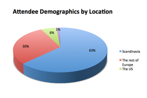
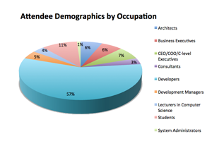
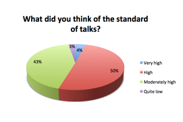

About the conference
The Erlang User Conference is a two-day tech conference focused on the Erlang programming language. It brings together the rapidly growing community that uses Erlang in order to showcase the language and its various application to today's distributed environments. Those less familiarized with the language get first-hand accounts on how companies solve real-world challenges using Erlang. Training courses on Erlang, OTP and other tools ad solutions based on the language are usually organised around the conference. We also offer a complimentary day of tutorials sponsored by Ericsson.
Few figures from EUC 2014
The conference had over 350 attendees, who came from all around Europe, but also from the US, Canada and Asia.

Participants were representatives of more than 80 IT-related companies. They were software professionals, business leaders and technology pioneers, passionate about functional technologies and recognising Erlang as a powerful tool for building highly concurrent, scalable, fault-tolerant applications.
The Erlang User Conference 2014 was well received. We attracted over 350 attendees from all around Europe, but also from the US, Canada and Asia. Participants were representatives of more than 80 IT-related companies. They were software professionals, business leaders and technology pioneers, passionate about functional technologies and recognising Erlang as a powerful tool for building highly concurrent, scalable, fault-tolerant applications. A total of 55 speakers delivered 50 talks. The conference included two days of talks (25 talks per day) and one day of tutorials (11 tutorials).

A total of 55 speakers delivered 50 talks. The conference included two days of talks (25 talks per day) and one day of tutorials (11 tutorials).

“The EUC was inspiring and thought provoking, and it provided a lot of valuable input to my on-going work.”
“I have met new people that might lead to more business for me in the future. Tons of new information, lots of new connections. Also a very good community.”
“Dissemination, making contacts, recruiting users of a tool. Networking. I realized that Erlang is a good, well-supported platform for reliable concurrent systems.”
Testimonials from EUC2014
Code of Conduct
All attendees, speakers, sponsors and volunteers at our conference are required to agree with the following code of conduct. Organisers will enforce this code throughout the event. We are expecting cooperation from all participants to help ensuring a safe environment for everybody.
tl;dr: Don’t be a Jerk
Need Help?
You have our contact details in the emails we've sent.
The Quick Version
Our conference is dedicated to providing a harassment-free conference experience for everyone, regardless of gender, sexual orientation, disability, physical appearance, body size, race, or religion. We do not tolerate harassment of conference participants in any form. Sexual language and imagery is not appropriate for any conference venue, including talks, workshops, parties, Twitter and other online media. Conference participants violating these rules may be sanctioned or expelled from the conference without a refund at the discretion of the conference organisers.
The Less Quick Version
Harassment includes offensive verbal comments related to gender, sexual orientation, disability, physical appearance, body size, race, religion, sexual images in public spaces, deliberate intimidation, stalking, following, harassing photography or recording, sustained disruption of talks or other events, inappropriate physical contact, and unwelcome sexual attention.
Participants asked to stop any harassing behavior are expected to comply immediately.
Sponsors are also subject to the anti-harassment policy. In particular, sponsors should not use sexualized images, activities, or other material. Booth staff (including volunteers) should not use sexualized clothing/uniforms/costumes, or otherwise create a sexualized environment.
If a participant engages in harassing behavior, the conference organizers may take any action they deem appropriate, including warning the offender or expulsion from the conference with no refund.
If you are being harassed, notice that someone else is being harassed, or have any other concerns, please contact a member of conference staff immediately. Conference staff can be identified as they'll be wearing branded t-shirts.
Conference staff will be happy to help participants contact hotel/venue security or local law enforcement, provide escorts, or otherwise assist those experiencing harassment to feel safe for the duration of the conference. We value your attendance.
We expect participants to follow these rules at conference and workshop venues and conference-related social events.
Original source and credit: The Ada Initiative
Please help by translating or improving: http://github.com/leftlogic/confcodeofconduct.com
This work is licensed under a Creative Commons Attribution 3.0 Unported License
Student Passes
It is our priority to build a bridge between academia and industry and support the new growing generation of programmers in developing new skills.
If you are a student, we have 25 free student passes to give away!
If you are an academic, we are happy to offer you a 50% discount academic pass.
Email us to get your pass.